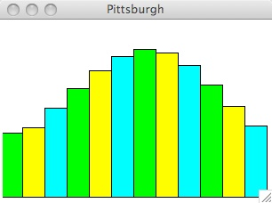

15-105 SPRING 2009 [CORTINA]
HOMEWORK 8 - due Friday, April 3
WRITTEN PROBLEMS (8 pts)
Hand these problems in on paper in class on the due date specified.
- (1 pt)
Britney Spears' management team is scheduling a concert tour for her
comeback which will visit 15 cities including the first concert in
her home town of
Los Angeles. She will perform one show in each city. She has a private
jet that will fly her directly from any city to any other city on her
tour. The cost of each flight depends on many factors including
availability of staff, landing fees at airports, etc. A computer can
compute the total travel cost for 1000 potential concert tour schedules
per second.
-
How long will it take to determine the sequence of cities in a
concert tour schedule that has the lowest total flight cost? Show your
work.
-
If Britney adds a 16th city to her tour, how many times longer will
it take the computer to compute the lowest total flight cost? Explain your
answer.
- (1 pt)
Consider the following formula in the propositional calculus:
~(A & B) & (A → C) & (C → B)
-
Compute the truth value of this formula for every possible assignment
of the variables A, B, and C. Show your work.
-
Is this formula satisfiable? Why or why not?
- (1.5 pts)
A one-story house is shown below. The owner does not want any
multi-colored rooms. Put another way, the owner wants to paint each room
with a single color, but the colors of all rooms do not have to be the
same color (but they could be). Hallways are considered rooms, but closets
are not rooms and are not shown in the diagram.
_________________________________________________
| | | | | |
| MASTER | | | DINING | |
| BEDROOM |BATH|BATH| KITCHEN | ROOM | |
| | | | | |
|________ |____|__ |_ __ _|__ __| |
| | HALLWAY | | HOME |
| ________ _____ OFFICE |
| | | | |
| BED- | BED- | FAMILY | LIVING | |
| ROOM | ROOM | ROOM ROOM | |
| | | | |
|______|_________________|_______________|________|
-
Using only 3 colors of paint (tan, white and yellow), how many different
ways can the owner paint the house? Explain your answer.
-
Now, the owner adds another requirement that no two rooms that share a
doorway can be painted the same color. Can this be done for the owner's
house? Either show a valid color assignment for each room or explain why
no such assignment is possible.
-
Why is this problem considered intractable in general?
- (1 pt)
The floor tiling problem described in class in undecidable with the
condition that we cannot rotate the tile designs that we are given.
Explain why this problem becomes decidable (in fact, the answer is always
YES) if we allow rotations.
- (1.5 pt)
-
For each of the following word correspondence problems, either find a
correspondence (sequence that yields the same word from X and Y) or
explain clearly why no such correspondence exists.
(i) (ii)
------------------------------- -------------------------------
| Group | 1 | 2 | 3 | 4 | | Group | 1 | 2 | 3 | 4 |
------------------------------- -------------------------------
| X | ab | bb | ab | ba | | X | abb | a | b | aaa |
| Y | ba | ba | aba | b | | Y | a | aa | a | bba |
------------------------------- -------------------------------
-
The word correspondence problem as described in class is
undecidable in general. Why?
- (1 pt)
The class P represents those problems that can be solved in
polynomial time. The class NP represents those problems with a solution
that can be verified in polynomial time.
Consider the traveling salesperson problem where we want to find a
tour of the N cities that costs at most K. Explain why this problem is in
NP.
- (1 pt)
Using the definitions for P and NP given in the previous problem,
if a problem is in P, is it in NP also? If a problem is in NP, is it in P
also?
COMPUTER PROBLEM (2 pts)
Hand this in electronically using the
Electronic Handin System by 11:59PM on the due
date indicated.
Write a Python program that reads in 12 temperatures from a text file into
an array. Then create a window that is 300 pixels wide by 200 pixels high.
In this window, draw a bar graph that shows these temperatures from
January at the left to December at the right. The bottom of the window
represents 0o and the top of the window represents
100o. Each bar should be 25 pixels wide. The height of each bar
depends on the temperature for each month. The colors of the bars should
alternate between green, yellow and cyan.
Once the bargraph is displayed, your program should wait for the user to
click the mouse on or above one of the bars. Depending on the location
clicked, display the corresponding
month and temperature in the console window.
Allow the user to click 5 times.
Programming Hints:
-
Create another array with the names of the months so you can easily print
out the correct one without using 12 if statements. Remember to
put the names of the months in quotation marks, e.g. "Jan", since
these are strings, not numerical values.
-
Use the win.getMouse() function to get the
point where the user clicks. Then use the getX
function to get the x position of the user's click.
The index of the month picked is x/25 since each bar is 25 pixels wide.
The user does not have to click on the bar itself; the user can click
anywhere in the vertical region in or above that bar.
SAMPLE DATA FILE: Right click HERE
to save the data file that contains the Pittsburgh temperatures.
You may assume the data files that we use to grade your program
will have 12 integers in the range 1 to 100 inclusive, one per line,
as in the example data file.
Your final program should work for any temperature data (between 1
and 100), not just Pittsburgh's temperatures.

Example graph created for the Pittsburgh temperatures given in homework
7.